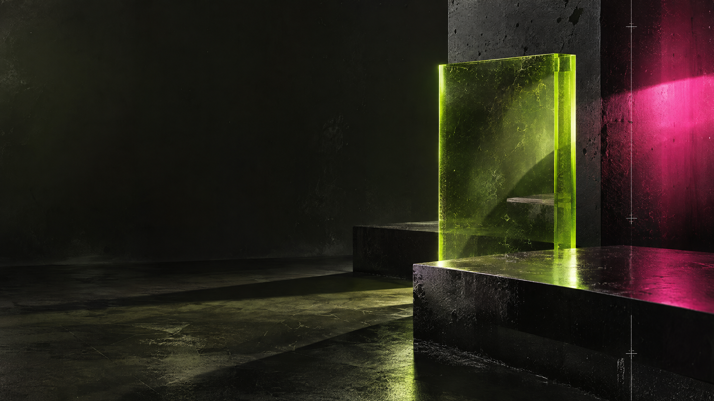

FIELD NOTE 00 / GITHUB PAGES READY
Make the
Space move.
A dark, playful toolkit for turning Muse AI Spaces into Android apps, desktop shells, browser sidebars, and strange little digital worlds.

REMOTE / BUT REALNO ORBITSOne URL.
Many bodies.
Android, Electron, browser sidebar, and blueprint templates with the sharp edges documented.
Open the kit ↗02 / LIBRARYSpaces are
the source.
Twelve named Spaces, one share-link reality, and the re-share rule that keeps the wrapper honest.
Browse the library ↗03 / SIGNALMake it
memorable.
Comical promotion art, animated grain, neon ribbons, and tiny bits of controlled chaos.
Enter the gallery ↗THE RULE